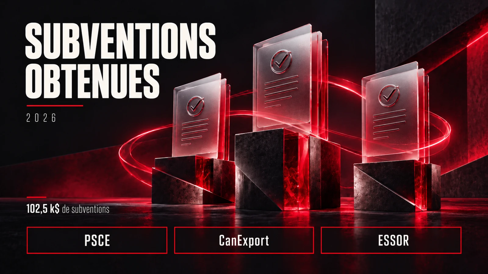

SmartPixel
CFO / Direction financière · Montréal
Contrôleur financier de juin 2022 à novembre 2023, puis direction de la fonction finance. Finance d’entreprise, FP&A, comptabilité, trésorerie et financement, en lien avec l’équipe de direction.
CFO / Directeur financier
Relier les chiffres à la stratégie.
Transformer les idées en actions.

01 / Repères & expertises
Fonction actuelle
Arrivée à Montréal
Langues
Deux univers, une approche
01Stratégie financière
02FP&A & reporting
03Trésorerie
04Financement & croissance
05Opérations financières
06Systèmes & automatisation
07Financement & levée de fonds
08Subventions & crédits d’impôt

02 / L’histoire derrière le parcours
La finance pour comprendre.
La stratégie pour avancer.
Mon parcours m’a conduit des grands groupes en France à la direction financière d’une entreprise technologique à Montréal. Chez L’Oréal et Henkel, j’ai travaillé sur des sujets de crédit, de pricing et de contrôle commercial.
J’ai rejoint SmartPixel en 2022 comme contrôleur financier, avant de prendre la direction de la fonction finance. Aujourd’hui CFO, j’accompagne l’équipe de direction sur la planification, la trésorerie, le financement et les décisions qui structurent la croissance.
Je m’intéresse aussi aux outils numériques, à l’automatisation et à l’IA : des moyens concrets de mieux comprendre l’information, simplifier les processus et construire de nouveaux projets.
03 / Expériences
CFO / Direction financière · Montréal
Contrôleur financier de juin 2022 à novembre 2023, puis direction de la fonction finance. Finance d’entreprise, FP&A, comptabilité, trésorerie et financement, en lien avec l’équipe de direction.
Sales Controller & Credit Manager · France
Contrôle budgétaire pour la division Beauty Care : suivi des marges arrière, remises, frais de coopération et conditions de paiement.
Credit Manager DPGP / Pricing Manager Travel Retail
Études de prix et élaboration de grilles tarifaires adaptées aux clients du Travel Retail au Moyen-Orient.
Président · Association
Un engagement associatif autour de la création et de la diffusion de contenus multimédias, cinématographiques et pédagogiques.
Chef de projet marketing commercial · Paris
Étude d’opportunité de l’offre DOC360 et analyse du marché français de la gestion électronique des documents.
04 / Projets
 Projet 001
Projet 001Construire un site qui prolonge mon parcours professionnel, documente mes projets et donne une place à mes idées comme à mes apprentissages.
Découvrir le projet
Projet 002Trois dossiers menés à bien et 102 500 $ de subventions obtenues pour soutenir l’exportation et la transformation numérique d’Active Media.
Découvrir le projet Projet 003
Projet 003500 000 $ de financement obtenus pour lancer la première phase d’Horizon, recruter une équipe de développement et soutenir la R&D de SmartPixel.
Découvrir le projet05 / Gardons le contact
Finance, technologie, projets : échangeons par téléphone, par courriel ou sur LinkedIn.
Échanger sur LinkedIn